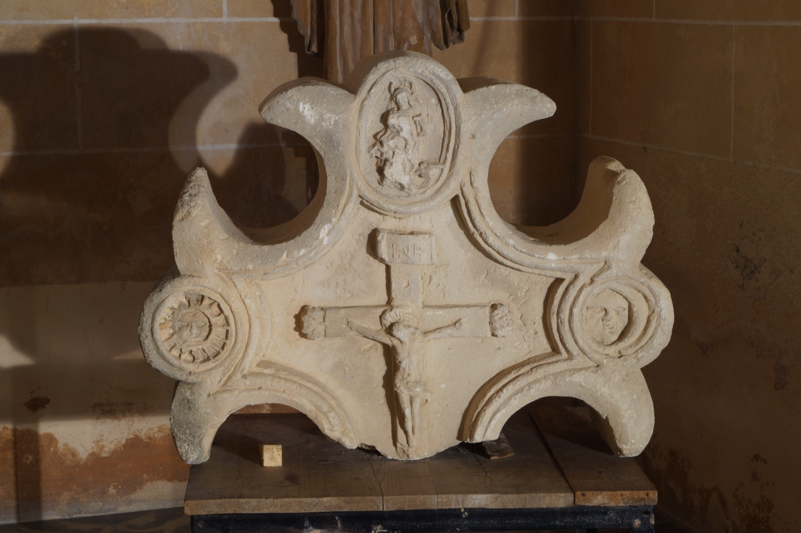

Fragment d'una antiga creu monumental gòtica que presidí la plaça Major de Vilafranca. A la part frontal s'hi veuen imatges del Sant Crist, santa Bàrbara sostenint una torre, el sol i la lluna. Al darrere hi ha una imatge de sant Martí a cavall, una alzina (un "surer", signe heràldic de la família Sureda) i unes porcions de cotó, signe heràldic de la família Cotoner.